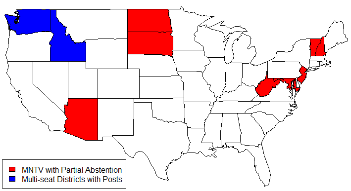

Isaac Hale’s Research
Published & Working Research Manuscripts
Predicting Strategic Vote With Perceptions of Candidate Viability

Abandon Ship? An Analysis of Strategic Voting among Liberal Democrat Voters in the 2015 UK Election
\(\star\)Manuscript Published in Parliamentary Affairs (2019) \(\star\)Manuscript Data Materials
\(\star\)Research featured in Invited London School of Economics Democratic Audit Blog Post (May 1, 2019)
Abstract: Strategic voting occurs when voters make vote choices using their ex ante expectations about the results of an election in addition to their sincere candidate preferences. While there is ample theoretical reason to believe strategic voting should occur under certain electoral conditions and institutional arrangements, the evidence for it in the literature has been mixed. I theorise that the polarisation of the two main British political parties and the highly publicised predictions of defeat for Britain’s primary national third party, the Liberal Democrats, make the 2015 UK election an ideal case for studying strategic voting. I adapt established methods of identifying strategic voting to this election and find evidence that Liberal Democrat voters in the UK voted strategically for Labour and Conservative candidates to maximise their odds of affecting the electoral outcome in their constituency.
Distribution of 2016 Federal Election Candidate Positions

The Distorting Effects of Racial Animus on Proximity Voting in the 2016 Elections
with Carlos Algara, PhD Candidate, University of California, Davis
\(\star\)Manuscript Published in Electoral Studies (2019) \(\star\)Manuscript Data Materials
Abstract: While the use of racial appeals by the 2016 Trump campaign is indisputable, researchers are actively debating their precise role in influencing voter behavior in the election. We seek to expand upon existing research which finds that racial animus electorally benefited the Trump campaign. We examine to what extent those benefits redounded to GOP candidates down-ballot and whether racial animus distorted ideological proximity voting in the 2016 election. We find that racial animus among voters helped Republicans at multiple ballot levels and that higher levels of racial animus distorted correct proximity voting among voters ideologically closest to the Democratic candidate. Our findings suggest that high salience campaign appeals on race at the presidential level can influence elections for the House and Senate. We also provide evidence that the process of racial partisan realignment is incomplete, as some white voters still vote incongruously with their ideology due to racial animus.
California Top-2 Election Competitiveness by Party Registration and Election Type

Some General Consequences of California’s Top-Two Primary System
with Benjamin Highton, Professor of Political Science, University of California, Davis &
Robert Huckfeldt, Distinguished Professor of Political Science, University of California, Davis
\(\star\)Manuscript Published in the California Journal of Politics and Policy (2016) \(\star\)Manuscript Data Materials
Abstract: This paper analyzes some of the general election consequences of the top-two primary system in California elections beginning in 2012. In particular we focus on general election contests between candidates of the same party that were not possible under the previous primary system, but have occurred with some regularity with the top-two.We find that same party elections are characterized by greater competitiveness, lower turnout, and less, but still substantial, polarized voting.
Map of States With Lower Legislative Chambers That Use Multi-seat Districts

Candidate Extremism and Electoral Design in U.S. State Legislative Elections
\(\star\)Manuscript Prepared for 2019 MPSA Annual Meeting Panel\(\star\)Working Manuscript Draft \(\star\)Manuscript Data Materials
Abstract: This study examines the effect of electoral system variation in U.S. state legislative elections on candidate ideological dispersion. Previous work suggests that, under certain conditions, greater district magnitude has a centrifugal polarizing effect on candidate ideology. Cross-national investigations of this theory by Ezrow (2008) and Dow (2001, 2011) have produced conflicting results. Building on this body of research, this paper leverages electoral system variation in U.S. state legislative elections to evaluate whether district-level electoral system variation influences candidate ideology. We find strong evidence for a polarizing effect of district magnitude on candidate ideology, even under plurality voting. This paper has significant implications for our understanding of candidate ideological positioning in sub-national contexts as well of how electoral systems affect the quality of representation voters receive from legislators.
Probability of Democratic House Vote by Racial Resentment and Candidate Race Among Whites

Post-Racial Politics? Racial Resentment and US House Elections, 2010-2016
\(\star\)Invited to Revise & Resubmit\(\star\)Working Manuscript Draft \(\star\)Manuscript Data Materials
Abstract: Despite the longstanding underrepresentation of blacks in Congress, political science research has not settled on the cause. While there is increasing evidence that racial attitudes affect vote choice in today’s congressional elections, how this effect interacts with the race of the candidates is unknown. This study addresses this debate by analyzing novel survey, census, and candidate data from the Obama era of congressional elections (2010-2016) in order to test whether racially prejudiced attitudes held by whites decrease their likelihood of supporting black Democratic candidates and Democratic candidates as a whole. In line with theoretical predictions, this paper finds that Democratic House candidates are less likely to receive votes among white voters with strong racial resentment towards blacks, and black Democratic candidates fare even worse. These findings provide an explanation for black legislative underrepresentation and contribute to theories of partisan racial realignment.
Copyright © 2019 by Isaac Hale. Made with RStudio.